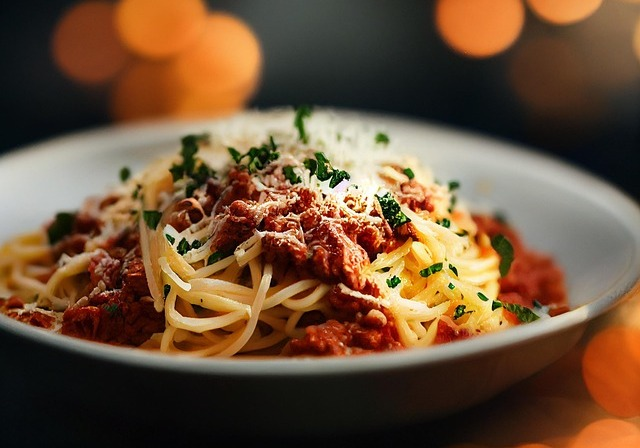

Spaghetti Bolognaise

Image by HANSUAN FABREGAS from Pixabay
Description
A sweet, tangy and spicy flavoured spaghetti bolognaise that'll blow away your taste buds and also become your go to "spag bol" recipe.
Ingredients
- 3 tbsp olive oil
- 1kg minced beef
- 2 to 3 carrots, chopped
- 4 celey sticks, chopped
- 2 onions, finely chopped
- 2 tbsp freshly minced garlic
- 1/2 cup of chicken stock
- 2 beef stock cubes
- 4 fresh tomoatoes, peeled and diced
- 800g diced tomatoes
- 2 tbsp tomato paste
- 1 tbsp Worcestershire sauce
- 1 tsp brown sugar
- 2 tsp dried oregano
- 2 tsp dried chilli flakes
- 1/2 lemon rind
- Salt and cracked black pepper to taste
- 500g spaghetti
- Grated Parmesan cheese to taste
Steps
- Heat up a tablespoon of olive oil in a large pot over medium high heat. Add the mince and cook until browned.
- Remove the mince to a spare bowl. Add two tablespoons to the pot and add the carrots, celery and onions along with garlic and cook for 3 minutes until softened.
- Add the chicken stock and bring to a simmer, making sure to clean up and browned mince remaining on the bootom of the pot.
- Return the mince to the pot before adding the diced tomatoes and tomato paste. Bring to a simmer.
- Add the Worcestershire sauce, brown sugar, dried oregano and chilli flakes, and lemon rind. Add salt and pepper. Cook for an hour or so with the lid loosely on, stirring occassionally.
-
- While waiting, bring a large pot of salted water to boil, adding the pasta and cooking for 12 to 15 minutes. Drain and set aside.
- Once the bolognaise is cooked and seasoned to your liking, add the pasta and stir in.
- Serve with grated Parmesan cheese and enjoy!
Home